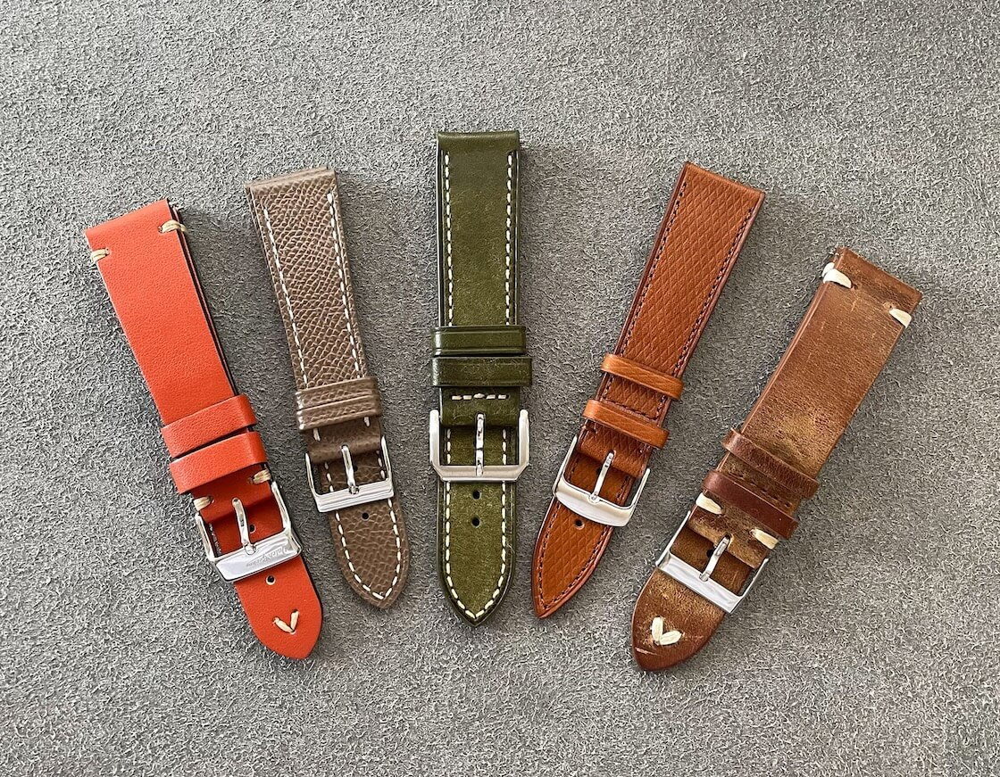

My Leather Watch Strap Pet Peeves
Normal people have pet peeves like "slow walkers in crowded places", "drivers who don't use turn signals", "loud chewing" or "anything related to leaf blowers". But watch people? Where do I start? Date windows, lug to lug dimensions, SW-200, fauxtina...
 Nenad Pantelic • November 15, 2024
Nenad Pantelic • November 15, 2024

For example, my day is all about the perfectly folded NATO strap, the satisfying click of a on-the-fly adjustment clasp, and the smell of Pueblo leather. Don't judge, you have your things!
But when it comes to pet peeves? They send me into a spiral of anxiety, Instagram commenting, and ranting.
The Little Things That Drive Me Crazy About Leather Watch Straps
Today you get a front row seat to the nerd-rage. And this is only about the leather straps. Don't judge, you have your things!
- Stiffness (Of Course): Some leather straps are stiff, especially around the spring bars, making them uncomfortable and digging into the wrist.
- Buckle Hole Mismatch: Holes are too far apart, so the fit is either too tight or too loose.
- Bulky Floating Keeper: The extra keeper meant to hold the tail is oversized and feels uncomfortable.
- Loose Keeper: The floating keeper slides around, letting the strap tail flap loose.
- Long Tail: The excess strap pokes out and gets caught on things.
- Last Hole Curse: The strap is so short I am always on the very last hole with no room to spare.
- Undeliner Sucks: The underside liner gets sticky, particularly in humid weather.
- Stinky Strap: The leather develops a funky smell over time.
- Buckle Scratches: The buckle scratches desks, laptop palm rests, and other surfaces.
- Buckle Scar: The buckle digs in into my wrist.
- Bulky on the Wrist: Some deployant clasps add significant thickness under the wrist, so the watch wears uncomfortable.
- Creaking Noises: The leather makes squeaking or creaking sounds as it moves.
- Stitching Frays: The stitching comes loose, and gets messy.
- Clashing Stitches: Minimal side stitches in different colors look very cheap.
- Not Enough Taper: Lack of tapering creates a strap that looks boxy and awkward, especially on smaller watches.
- Odd Sizes: Stores act like less common lug widths such as 19mm or 21mm simply do not exist.
- Color Fades: The dye fades or changes color with exposure to sunlight and sweat.
- Deformation: Leather loses the shape quickly.
- Water Stains: A single splash can create a permanent water stain, destroying the strap's look.
- No matter how carefully I take care of a strap, leather gives up pretty fast.
In the End
This was not too bad. Feels a bit like a therapy session 🤗
Honestly, despite my little rant, I do genuinely enjoy leather straps. Actually, most of the ones I get my hands on are perfectly fine. These are just nitpicky things that occasionally make me wonder if the strap I got is subtly trying to test my patience.